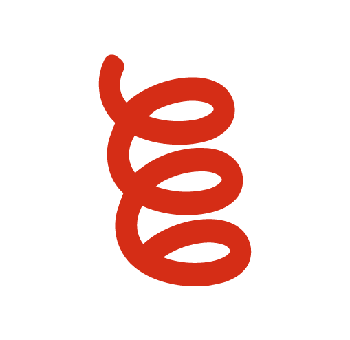

Copiadora Politécnica
Cópias e impressões, com planos de cotas para alunos.
O Grêmio Politécnico é a entidade dos alunos da Poli desde 1903. Representação estudantil, serviços e apoio, tudo começa por aqui.
Mantidos pelo Grêmio para o dia a dia de quem estuda na Poli.
Cópias e impressões, com planos de cotas para alunos.

Lanchonete com refeições a preços acessíveis.
Prédio do Biênio
Escola de idiomas com mais de 30 anos de experiência: alemão, espanhol, francês, inglês, italiano e português.
O Grêmio leva as demandas dos politécnicos à diretoria da escola e às instâncias da USP. Se algo na Poli precisa mudar, conte para a gente.

Fundado em 1º de setembro de 1903 por estudantes da Escola Politécnica, o Grêmio é a segunda entidade estudantil mais antiga do Brasil.
Hoje é uma associação de representação estudantil e de serviços, formada por alunos e colaboradores, que trabalha pela formação, pelo apoio social e pela vida acadêmica de quem estuda na Poli.